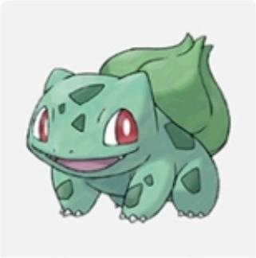
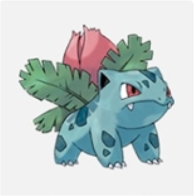
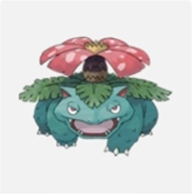
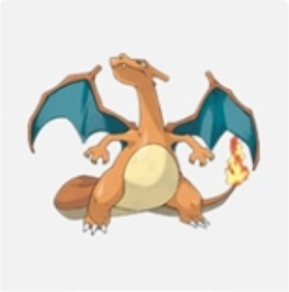
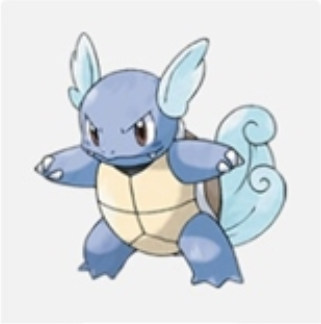
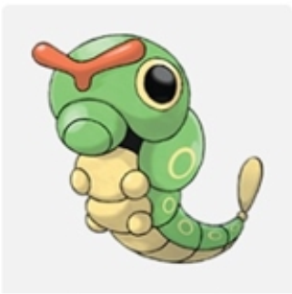
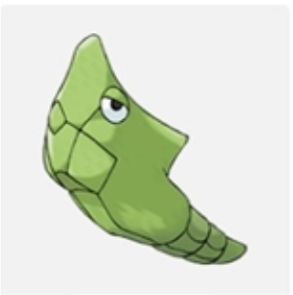
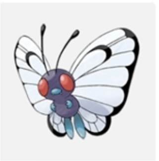

Bulbasaur
Wraz z Charmanderem i Squirtlem jest jednym z trzech starterów, które trener otrzymuje na początku w regionie Kanto
Bulbasaur jest gadopodobnym stworzeniem, przypominającym nieco ropuchę lub młodego dinozaura. Jego skóra jest zielono-błękitna, jednak pokrywają ją sporej wielkości, zielonkawe cętki.

Ivysaur
Wraz z ewoluowaniem, jego skóra zyskała bardziej błękitny kolor, oraz mocniejsze zęby z dwoma wystającymi kłami. Gdy pąk na jego grzbiecie przygotowuje się do rozkwitu, zaczyna puchnąć i rozsiewać dookoła silny charakterystyczny zapach.

Venusaur
Venusaur jest jednym z największych pokemonów roślinnych. W porównaniu do Ivysaura, jego skóra przyjmuje niebieskozielony kolor i staje się również o wiele grubsza. Pokrywają ją teraz również liczne chropowatości. Posiadający 6 płatków pąk na grzbiecie pokemona całkowicie rozkwita, umożliwiając Venusaurowi użycie pełni swych roślinnych mocy
Charmander
Charmander jest jednym z trzech starterów Pokémon z regionu Kanto.
Charmander jest pomarańczowym stworzeniem przypominającym dwunożną salamandrę z niektórymi cechami dinozaura, szczególnie jak u teropodów. Charmander ma cztery małe kły widoczne na górnej i dolnej szczęce, jego spód ma rozległe zabarwienie kremowego koloru. Jej najbardziej zauważalną cechą jest płomień na końcu ogona.
Charmeleon
Charmeleon pokrojem ciała bardzo przypomina Charmandera. Jest on od niego nieco większy, zmienia się też kształt głowy pokemona. Pojawia się na niej krótki, masywny róg skierowany do tyłu, zmienia się także wygląd oczu. Sprawia to, że staje się on nieco podobny do swej ostatecznej ewolucji, Charizarda.

Charizard
Charizard jest bardzo dużym pokemonem, zdecydowanie przewyższając pod tym względem swoje poprzednie ewolucje. Łuski pokemona stają się znów intensywnie pomarańczowe. Powiększają się pazury, uwydatniają wyraźnie kły. Na jego grzbiecie pojawiają się sporych rozmiarów skrzydła, które są cechą charakterystyczną tego pokemona. Są one ciemnozielone po wewnętrznej stronie, co jest nietypową kolorystyką dla jego linii ewolucyjnej.
Squirtle
Squirtle jest jednym z trzech starterów Pokémon dostępnych w regionie Kanto
Squirtle jest niewielkim pokemonem przypominającym pokrojem ciała żółwia. Jego najbardziej charakterystyczną cechą jest dużych rozmiarów skorupa, do której pokemon chowa się w sytuacji zagrożenia lub niekiedy podczas snu. Jest ona koloru jasnobrązowego, podobnego nieco do barwy piasku co prawdopodobnie ułatwia kamuflaż.

Wartortle
Wartortle pokrojem ciała bardzo przypomina swoją poprzednią ewolucję, Squirtle.
Pokemon ten jest znacznie bardziej agresywny od Squirtle. Są świetnymi pływakami, potrafią nurkować na głębokości nieosiągalne dla ludzi i pozostawać w zanurzeniu przez wiele godzin. Szeroki ogon ułatwia im pływanie przy dużych prędkościach, a także służy myleniu przeciwnika.
Blastoise
Blastoise, tak jak jego poprzednie formy, jest żółwiem. Jego skorupa nie zmienia koloru. U góry pancerza, tuż za łapami, znajdują się dwa działka (są na takiej samej wysokości, co jego górne kończyny). Jest największą formą w swoich ewolucji. Porusza się na dwóch łapach, jest ciężki i masywny.

Caterpie
Caterpie jest zieloną, uroczą gąsienicą, oznaczoną po bokach żółtymi kółkami, kremowym podbrzuszem. Jej najbardziej zauważalną cechą wyglądu są czułki, mniej więcej o koralowej barwie oraz duże oczy w kształcie oznaczeń, co pozwala mu zaskoczyć przeciwnika. Dzieli wiele cech z innymi pokémonami larwami i ich przebiegi ewolucyjne są bardzo podobne larwa -> kokon -> pokemon.

Metapod
Metapod (jap. トランセル Toranseru, niem. Safcon) - Pokémon kokon I generacji. Forma przejściowa Caterpie do swojej ostatecznej formy Metapod jest pokemonem insektem. Ewoluuje z Caterpiego na 7 Lv. Na 10 lvl ewoluuje w Butterfree. Potrafi wykonać ruch Utwardzenie, który sprawia że jego ciało jest twarde jak stal.

Butterfree
Butterfree przypomina motyla. W odróżnieniu od prawdziwych owadów, ma tylko cztery kończyny, które mają blado niebieski kolor. Ma również nos w tym samym kolorze. Ubarwienie ciała Butterfree jest fioletowoniebieskie. Ma duże, białe skrzydła z czarnymi fragmentami. Ma duże oczy złożone o czerwonawym kolorze. Dwie pary skrzydeł pokryte są drobnymi łuskami. Jego nogi są pokryte drobnymi włoskami, które pomagają mu w zbieraniu miodu.